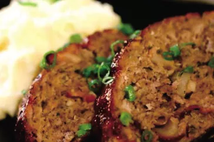

Air Fryer Meatloaf
This juicy air fryer meatloaf is easy to make in a fraction of the time compared to cooking a meatloaf in the oven. Serve with your favorite sauce and mashed potatoes for a comforting meal.

SAir Fryer Meatloaf Ingredients
These are the ingredients you’ll need to make this million Air Fryer Meatloaf recipe:
- Beef: This air fryer meatloaf recipe starts with a pound of lean ground beef.
- Vegetables: You’ll need an onion for the loaf and mushrooms to press into the top.
- Egg: An egg lends moisture and helps bind the meat mixture together.
- Dry bread crumbs: Use store-bought bread crumbs or make your own at home.
- Seasonings: Season the meatloaf with fresh thyme, salt, and pepper.
- Oil: Coat the top of the meat loaf with olive oil before cooking in the air fryer.
How to Make Air Fryer Meatloaf
- Mix the meat, onion, egg, breadcrumbs, and seasonings in a bowl.
- Transfer the mixture to small loaf pan, press in the mushrooms, and coat with oil.
- Roast until browned, let cool slightly, the cut into slices.